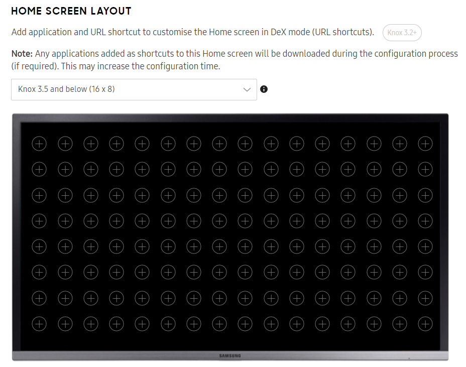

Advanced features
Last updated October 7th, 2025
The following settings are available:
- Shared devices (Dynamic edition only)
- Enterprise Billing (Dynamic edition only)
- DeX mode
- Motion & gesture
- Routine applets
- SIM lock (Dynamic edition only)
- OMC mode
Shared devices (Dynamic edition only)
Shared devices allows multiple users to have their own profile, apps, and files on a single device. Device users can sign in with their Active Directory credentials and access their own data, but can’t access data and settings for other users’ profiles.
A shared device configuration is optional and not required for profile creation in Knox Configure. For details, see Shared Device.
To set up shared devices, enable Shared device and enter your Active Directory domain name. Then, customize the shared device screen with your enterprise’s branding information and configure the shared device settings for the device.
Optionally, select Enable Kerberos SSO to upload Samsung’s recommended Kerberos authenticator to the device.
Enterprise Billing (Dynamic edition only)
Enterprise billing allows the device user to separate billing between enterprise apps and personal apps.
Note that you need to add at least one APN in order to use enterprise billing.
To set up enterprise billing, enter the following information:
- Profile name
- Applications in Personal mode — Enter the package names of apps used for business. Your enterprise is responsible for data costs incurred by these business apps.
- Roaming — Turn on to enable users to connect to data while roaming.
Under SELECT APN section, you can configure the following settings:
- APN1 — Add multiple APN resources if your device users have different service providers. The first applicable APN resource will be used by Enterprise Billing based on their service provider.
- If necessary, select CLEAR BILLING PROFILE & REVERT TO DEFAULT APN to use the default APN resource configuration.
DeX mode
Samsung DeX is a Knox Configure feature that lets you transform compatible Samsung devices, such as smartphones and tablets, into desktop-like computing experiences. It allows users to connect their devices to external displays, keyboards, and mice, providing a more productive and versatile environment for work and entertainment.
DeX mode is supported on devices starting from S8/S8+, Note8, S9/S9+, Note9 and Tab S4, running Knox version 3.1 or higher, and works with both both Setup and Dynamic edition profiles in Normal mode.
To configure DeX mode:
-
If your profile uses Dynamic edition, select Disable DeX mode to prevent device users from using DeX mode on their devices.
-
Under BRANDING, set the booting logo, the default home screen wallpaper, and the default lock screen wallpaper.
-
Under DISPLAY, select Set screen timeout (seconds) to define an inactivity interval for the DeX device’s screen timeout. Select an interval in a range from 15 seconds to 60 minutes.
-
Under HOME SCREEN LAYOUT, select the Knox version of the device you’re configuring to view a preview of the DeX mode home screen. In the preview, click to add applications or URL shortcuts to the home screen. URL shortcuts are only supported on DeX devices running Knox version 3.1 and higher, up to Knox 3.10.
URL shortcuts are not available for devices running Android 15 (V OS) with Knox 3.11.

-
Under APPLICATIONS IN DEX MODE, select any apps you want to auto-launch when the user launches DeX mode.
Any application added as a shortcut to the home screen will be downloaded to the device during the configuration process. This may increase the required configuration time required for the DeX device to receive its configuration from the Knox Configure server.
-
Enter the package names of any apps you want to disable in DeX mode. You can upload app package names in bulk using a CSV file.
-
If your profile uses Dynamic edition, under DEVICE CONNECTIVITY, select Enforce virtual MAC address to force devices to use virtual MAC addresses in DeX mode.
Motion & gesture
Select Motions and gestures to configure the following features. Each feature can be turned On or Off for the profile and can also be set to either Allow or Do not allow device user changes or Do not allow and hide setting from user.
-
Smart stay — When enabled, the screen remains unlocked as long as the device camera can detect your eyes looking at the screen. When you put the phone down or look away, the device will turn off based on the screen’s current timeout settings.
-
Smart alert — When enabled, smart alert informs the device user of missed calls and text messages by vibrating the phone when its picked up.
-
Easy mute — When enabled, easy mute allows you to mute incoming calls and alarms by placing your hand on the screen. On Galaxy S8, S8+, S7 and S7 edge platforms you can also mute calls and alarms by placing the phone face down on a flat surface.
-
Palm swipe to capture — When enabled, this feature allows you swipe your hand across the device screen to capture the current device display. Once captured, the image resides in the screenshots album/folder in the gallery.
-
Swipe to call or send messages — When enabled, this feature allows you to call or send messages by swiping your finger across a contact’s information in the phone or address book.
Routine applets
Routine applets allow you to easily program devices to respond to events based on various factors.
For details on how to create and apply routine applets, see Knox Configure Routines.
SIM lock (Dynamic edition only)
Enable SIM lock to prevent the use of the device’s corporate SIM card on any other device. If the device’s SIM card is removed and inserted into another device, the SIM card will be locked unless it’s unlocked by an admin using a PIN.
For each of the device’s SIM cards, select Enable to turn on SIM lock and enter a PIN that you can use to unlock the SIM card.
OMC mode
Enable or disable the device from being customized by a source other than Knox Configure.
On this page
Is this page helpful?